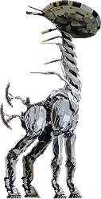
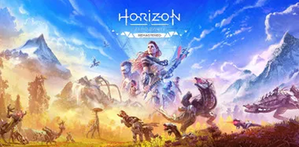

Saga Horizon



La Historia de Horizon desde sus orígenes
Horizon es una saga de videojuegos que empezó con Horizon Zero Dawn, donde la protagonista, Aloy, desea descubrir quien es su madre y evita la extinción de la humanidad por el camino; le siguió una secuela, Horizon Forbiden West, donde continúa con sus aventuras para salvar toda la vida en la Tierra; también hay un spin-off llamado Horizon Call of the Mountain en el que controlas a un personaje diferente en mitad de las aventuras de Aloy en Zero Dawn, siendo el único juego en relidad virtual de la saga; además existe un juego de lego denominado LEGO Horizon Adventures, que es un resumen de la historia original con el humor de lego.